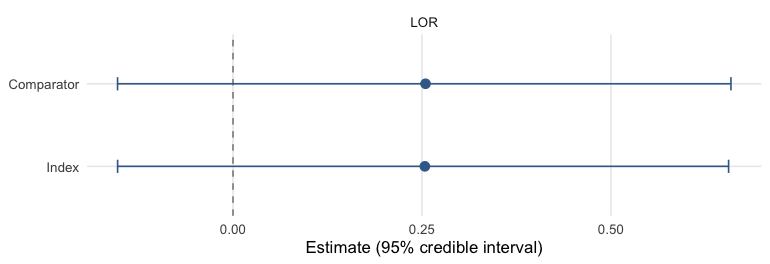
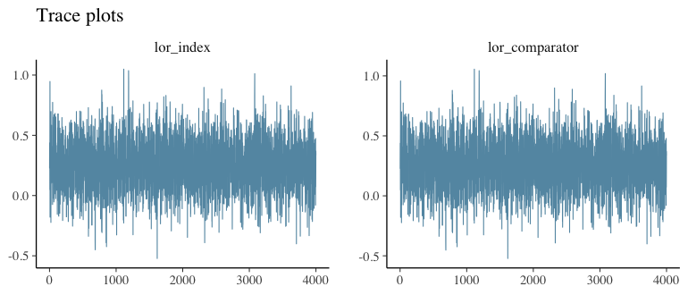

Fitting, priors, and diagnostics
Source:vignettes/fitting-and-diagnostics.Rmd
fitting-and-diagnostics.RmdThis vignette covers the mechanics of fitting an ML-UMR model with
mlumr(): sampler control, backends, priors, inspecting a
fit, and MCMC diagnostics. It is family-agnostic, we illustrate with the
real plaque-psoriasis binary example from
vignette("binary-outcomes"), but the workflow is identical
for continuous, count, and survival outcomes. For which method
to report, see vignette("choosing-a-method").
mlumr() fits two model variants by Stan:
model = "spfa" (shared prognostic-factor coefficients) and
model = "relaxed" (treatment-specific coefficients,
allowing effect modification). The default backend is
rstan; cmdstanr is an optional alternative.
The sampler messages, timings and Engine: line shown
throughout this vignette were produced with cmdstanr, which
vignettes/precompile.R selects, so running the same code
with the defaults prints rstan’s equivalents instead.
A model to work with
We reuse the plaque-psoriasis binary example, a compact ML-UMR fit
that the rest of this vignette inspects, tunes, and diagnoses (the data
preparation is covered in vignette("binary-outcomes")):
library(mlumr)
data("psoriasis_ipd") # bundled with mlumr (from multinma, GPL-3)
data("psoriasis_agd")
covs <- c("age", "bsa", "weight")
ipd <- psoriasis_ipd
ipd$bsa <- ipd$bsa / 100 # body-surface area: % -> proportion
ipd <- ipd[ipd$study == "UNCOVER-2" & ipd$treatment == "IXE_Q4W", ]
ipd <- ipd[stats::complete.cases(ipd[, c("pasi75", covs)]), ]
agd <- psoriasis_agd
agd$bsa_mean <- agd$bsa_mean / 100; agd$bsa_sd <- agd$bsa_sd / 100
agd <- agd[agd$study == "FIXTURE" & agd$treatment == "SEC_300", ]
dat <- combine_data(
set_ipd(ipd, treatment = "treatment", outcome = "pasi75", covariates = covs),
set_agd(agd, treatment = "treatment", outcome_n = "pasi75_n", outcome_r = "pasi75_r",
cov_means = c("age_mean", "bsa_mean", "weight_mean"),
cov_sds = c("age_sd", "bsa_sd", "weight_sd"),
cov_types = c("continuous", "continuous", "continuous")))
dat <- add_integration(dat, n_int = 64,
age = distr(qgamma, mean = age_mean, sd = age_sd),
bsa = distr(qlogitnorm, mean = bsa_mean, sd = bsa_sd),
weight = distr(qgamma, mean = weight_mean, sd = weight_sd))
fit <- mlumr(dat, model = "spfa",
prior_beta = prior_normal(0, 2.5, autoscale = TRUE),
chains = 4, iter = 2000, warmup = 1000, seed = 2026, refresh = 0)
#> Running MCMC with 4 parallel chains...
#>
#> Chain 1 finished in 0.8 seconds.
#> Chain 2 finished in 0.8 seconds.
#> Chain 3 finished in 0.8 seconds.
#> Chain 4 finished in 0.8 seconds.
#>
#> All 4 chains finished successfully.
#> Mean chain execution time: 0.8 seconds.
#> Total execution time: 1.1 seconds.Controlling the sampler
All sampler controls are arguments to mlumr(). For a
production analysis use more chains and iterations than the short
settings above:
fit <- mlumr(
dat, model = "spfa",
chains = 4, # number of MCMC chains
iter = 4000, # total iterations per chain
warmup = 2000, # warmup iterations
seed = 2026, # reproducibility
adapt_delta = 0.99, # raise toward 1 to remove divergences
max_treedepth = 15, # raise if treedepth is saturated
refresh = 500 # progress printing (0 = silent)
)Backend selection
rstan (default) uses the model compiled into the
installed package. cmdstanr is an optional backend,
selected per fit or globally with
mlumr_engine("cmdstanr"):
fit_cmd <- mlumr(dat, model = "spfa", engine = "cmdstanr", seed = 2026, refresh = 0)cmdstanr is often faster once compiled, especially with
parallel chains and long runs. Posterior estimates agree up to Monte
Carlo error.
Priors
The defaults, prior_normal(0, 10) for intercepts and
prior_normal(0, 2.5) for regression coefficients, are
generic starting values rather than calibrated choices for every family
and outcome scale. Autoscaling divides a coefficient
prior’s location and scale by each covariate’s SD so its intended
contribution is preserved when predictors use different units. Inspect
the priors actually passed to Stan, including autoscaled scales, with
prior_summary():
prior_summary(fit)
#> Priors for ML-UMR Fit
#> =====================
#>
#> Intercepts (mu_index, mu_comparator):
#> normal(0, 10)
#> (package default, mlumr 0.1.0.9000)
#>
#> Regression coefficients (beta):
#> Family: normal
#> coefficient mean scale autoscaled sd_x
#> age 0 0.196 TRUE 12.784
#> bsa 0 14.055 TRUE 0.178
#> weight 0 0.120 TRUE 20.794
#> (scale = user_scale / sd_x for autoscaled rows)Overlaying the prior on the posterior shows how much the data have updated each parameter, the intercepts move sharply away from their \mathrm{N}(0,10) prior:
plot_prior_posterior(fit, pars = c("mu_index", "mu_comparator"))
plot of chunk prior-post
Inspecting a fit
print() gives a one-line description of the model;
summary() tabulates the posterior for every parameter
(point estimate, credible interval, and the per-parameter convergence
diagnostics):
print(fit)
#> ML-UMR Fit
#> ==========
#>
#> Model: SPFA (Shared Prognostic Factors)
#> Family: Binary
#> Link: logit
#> Engine: cmdstanr
#> Treatments:
#> Index (IPD): IXE_Q4W
#> Comparator (AgD): SEC_300
#>
#> Data:
#> IPD: n = 345 observations
#> AgD: 1 rows
#> Covariates: 3
#> Integration points: 64
#>
#> Sampling:
#> Chains: 4
#> Iterations: 2000 (warmup: 1000 )
#>
#> Key Parameters:
#> variable mean sd 2.5% 97.5% Rhat
#> mu_index 1.44618427 0.15636550 1.15196094 1.7651909 0.9995392
#> mu_comparator 1.17260184 0.15224510 0.88731421 1.4799876 1.0000963
#> lor_index 0.25377673 0.20530813 -0.15266887 0.6555978 1.0012879
#> lor_comparator 0.25466793 0.20617373 -0.15273282 0.6587242 1.0013579
#> rd_index 0.04763409 0.03873935 -0.02809253 0.1234016 1.0017769
#> rd_comparator 0.04156580 0.03362521 -0.02554187 0.1053535 1.0015519
#>
#> Use summary() for full results
summary(fit)
#> ML-UMR Model Summary
#> ====================
#>
#> Model: SPFA
#> Family: Binary
#> Link: logit
#> Engine: cmdstanr
#> Treatments: IXE_Q4W (IPD) vs SEC_300 (AgD)
#>
#> MCMC Diagnostics:
#> Divergent transitions: 0
#> Max treedepth hits: 0
#> Max Rhat: 1.004
#> Min ESS: 1890
#>
#> Intercepts (logit scale):
#> variable mean sd 2.5% 97.5% Rhat
#> mu_index 1.446184 0.1563655 1.1519609 1.765191 0.9995392
#> mu_comparator 1.172602 0.1522451 0.8873142 1.479988 1.0000963
#>
#> Regression Coefficients:
#> variable mean sd 2.5% 97.5% Rhat
#> beta[age] -0.04072437 0.010852931 -0.06213992 -0.020515311 1.0013211
#> beta[bsa] 0.09474860 0.738994077 -1.31835682 1.580247738 1.0015116
#> beta[weight] -0.01462932 0.006335175 -0.02729679 -0.002487916 0.9998753
#>
#> Marginal Treatment Effects:
#> Log Odds Ratios:
#> variable mean sd 2.5% 97.5%
#> lor_index 0.2537767 0.2053081 -0.1526689 0.6555978
#> lor_comparator 0.2546679 0.2061737 -0.1527328 0.6587242
#> Risk Differences:
#> variable mean sd 2.5% 97.5%
#> rd_index 0.04763409 0.03873935 -0.02809253 0.1234016
#> rd_comparator 0.04156580 0.03362521 -0.02554187 0.1053535
#> Risk Ratios:
#> variable mean sd 2.5% 97.5%
#> rr_index 1.067584 0.05630268 0.9641510 1.183359
#> rr_comparator 1.054985 0.04509862 0.9677899 1.144179Population-averaged effects, absolute predictions, and the raw
posterior draws are available from marginal_effects() and
predict() (the available measures and prediction types
depend on the family, see the per-outcome vignettes):
knitr::kable(marginal_effects(fit, effect = "lor"), caption = "Marginal log odds ratios")| variable | effect | population | mean | sd | q2.5 | q50 | q97.5 |
|---|---|---|---|---|---|---|---|
| lor_index | LOR | Index | 0.2537767 | 0.2053081 | -0.1526689 | 0.2538476 | 0.6555978 |
| lor_comparator | LOR | Comparator | 0.2546679 | 0.2061737 | -0.1527328 | 0.2545148 | 0.6587242 |
Both return both target populations by default, the index and the comparator, which is what separates ML-UMR from the frequentist benchmarks:
knitr::kable(predict(fit, type = "response"),
caption = "Standardized response probabilities, both populations")| treatment | population | mean | sd | q2.5 | q50 | q97.5 |
|---|---|---|---|---|---|---|
| IXE_Q4W | Index | 0.7744589 | 0.0220586 | 0.7290820 | 0.7750439 | 0.8165154 |
| SEC_300 | Index | 0.7268248 | 0.0314643 | 0.6626042 | 0.7277590 | 0.7862674 |
| IXE_Q4W | Comparator | 0.8120690 | 0.0234368 | 0.7639743 | 0.8132213 | 0.8551468 |
| SEC_300 | Comparator | 0.7705032 | 0.0241048 | 0.7232535 | 0.7706705 | 0.8155886 |
MCMC diagnostics
mlumr() automatically warns about divergent transitions,
treedepth saturation, high Rhat (> 1.01), and low ESS (< 400).
Inspect them directly:
fit$diagnostics$n_divergent
#> [1] 0
fit$diagnostics$n_max_treedepth
#> [1] 0
max(fit$summary$Rhat, na.rm = TRUE)
#> [1] 1.003758
min(fit$summary$n_eff, na.rm = TRUE)
#> [1] 1890.414Posterior intervals for the key effects come straight from
marginal_effects() and its plot() method:
plot(marginal_effects(fit, effect = "lor"))
plot of chunk intervals
For convergence diagnostics on the raw draws, bayesplot
works directly on fit$draws, here trace plots of the same
parameters:
bayesplot::mcmc_trace(fit$draws, pars = c("lor_index", "lor_comparator")) +
ggplot2::labs(title = "Trace plots")
plot of chunk trace
Prior sensitivity
prior_sensitivity() refits across a grid of
prior_beta scales, holding every other model setting fixed,
so any movement in the summaries is attributable to the prior alone. The
fit used here is the SPFA model built above, where the coefficients are
identified by the IPD and the sweep is expected to be flat:
prior_sensitivity(fit, prior_beta_scales = c(1, 2.5, 5))
#> Running MCMC with 4 parallel chains...
#>
#> Chain 1 finished in 0.6 seconds.
#> Chain 2 finished in 0.5 seconds.
#> Chain 3 finished in 0.5 seconds.
#> Chain 4 finished in 0.6 seconds.
#>
#> All 4 chains finished successfully.
#> Mean chain execution time: 0.6 seconds.
#> Total execution time: 0.8 seconds.
#> Running MCMC with 4 parallel chains...
#>
#> Chain 1 finished in 0.6 seconds.
#> Chain 2 finished in 0.6 seconds.
#> Chain 3 finished in 0.6 seconds.
#> Chain 4 finished in 0.6 seconds.
#>
#> All 4 chains finished successfully.
#> Mean chain execution time: 0.6 seconds.
#> Total execution time: 0.9 seconds.
#> Running MCMC with 4 parallel chains...
#>
#> Chain 1 finished in 1.0 seconds.
#> Chain 2 finished in 1.1 seconds.
#> Chain 3 finished in 1.0 seconds.
#> Chain 4 finished in 0.9 seconds.
#>
#> All 4 chains finished successfully.
#> Mean chain execution time: 1.0 seconds.
#> Total execution time: 1.5 seconds.
#>
#> Prior sensitivity: posterior of marginal treatment effects
#> =========================================================
#>
#> scale parameter effect mean sd q2 q50 q98
#> 1.0 lor_index LOR 0.2450842 0.2042432 -0.1572848 0.2449714 0.6380143
#> 1.0 lor_comparator LOR 0.2459477 0.2050747 -0.1581046 0.2454590 0.6396459
#> 2.5 lor_index LOR 0.2537767 0.2053081 -0.1526689 0.2538476 0.6555978
#> 2.5 lor_comparator LOR 0.2546679 0.2061737 -0.1527328 0.2545148 0.6587242
#> 5.0 lor_index LOR 0.2481648 0.2012573 -0.1446230 0.2465931 0.6394745
#> 5.0 lor_comparator LOR 0.2490404 0.2020809 -0.1439587 0.2471842 0.6418033
#>
#> Interpretation: if posterior summaries are approximately constant
#> across scales, the inference is data-driven rather than prior-driven.The case that motivates the check is the relaxed model, whose
comparator coefficients are informed only through the aggregate
likelihood and can therefore be prior-sensitive. For a relaxed binomial,
normal, or poisson fit, run check_identification() on the
data first, since a sweep cannot repair a design that carries no
information about a coefficient, then pass the relaxed fit to
prior_sensitivity() and sweep the comparator prior
alongside the index one with prior_beta_comparator_scales.
See vignette("subgroup-identification", "mlumr"). Survival
is the exception: check_identification() refuses it,
because a reconstructed comparator curve is not a set of scalar subgroup
summaries and a row count neither bounds nor certifies what it
identifies. For a relaxed survival fit, inspect the coefficient
posterior and use the prior sweep. The reported marginal
posterior-to-prior variance change is descriptive and is not a fraction
learned from the data.
Troubleshooting
-
Divergent transitions, raise
adapt_delta(e.g.0.99). -
Slow convergence / low ESS, increase
iterandwarmup. -
Relaxed-model identifiability, with little AgD, the
comparator-specific coefficients are weakly identified (mlumr warns).
Use SPFA if effect modification is not expected, supply more informative
prior_beta, or runprior_sensitivity().